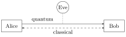

10 No-cloning and quantum key distribution
Quantum mechanics forbids copying an unknown state and guarantees that measuring disturbs. Turned around, these limitations become a security guarantee: any eavesdropper on a quantum channel leaves traces. Quantum key distribution (QKD) exploits this to let two parties grow a shared secret key whose security rests on physics, not on computational assumptions. This chapter proves the no-cloning theorem, describes BB84 and its descendants, computes secret-key rates, discusses real implementations (lossy channels, weak laser pulses, decoy states), and closes with quantum random number generation.
10.1 Why quantum cryptography
Classical public-key cryptography (RSA, Diffie–Hellman) relies on problems believed to be computationally hard. A classical algorithmic breakthrough could break it, and a quantum computer will break RSA (Shor’s algorithm, Chapter 13). Post-quantum cryptography replaces the hard problems; QKD replaces the assumption altogether.
To encrypt an \(n\)-bit message \(m\), Alice adds bitwise (XOR) an \(n\)-bit uniformly random key \(k\): \(c = m \oplus k\). Bob decrypts with \(m = c \oplus k\). If the key is secret, random, as long as the message and never reused, the ciphertext is statistically independent of the message (Shannon, 1949): perfect secrecy.
The problem is distributing the key. QKD solves exactly this: it lets Alice and Bob exchange random and secret keys, which are then used in a one-time pad or another symmetric cipher.
10.2 The no-cloning theorem
There is no unitary \(\hat U\) and fixed blank state \(\ket e\) such that \(\hat U\ket\psi\ket e = \ket\psi\ket\psi\) for every state \(\ket\psi\).
Proof. Suppose it worked for \(\ket\psi\) and \(\ket\phi\). Taking the scalar product of \(\hat U\ket\psi\ket e = \ket\psi\ket\psi\) with \(\hat U\ket\phi\ket e = \ket\phi\ket\phi\) and using unitarity, \[\braket{\phi|\psi}\braket{e|e} = \braket{\phi|\psi}^2 \quad\Longrightarrow\quad \braket{\phi|\psi} \in \{0, 1\}.\] Only identical or orthogonal states can be cloned by the same machine. \(\square\)
(Allowing ancillas and measurements, i.e. general channels, does not help.) Orthogonal states can be copied — that is classical information. The theorem is consistent with no-signalling: a cloner would let Bob distinguish Alice’s choice of basis on half of an entangled pair, allowing superluminal communication.
10.3 The BB84 protocol

Figure: QKD setting. Eve can do anything to the quantum signals, but can only listen to the authenticated classical channel.
The quantum channel is public and not authenticated: Eve can interact with the signals arbitrarily. The classical channel is public but authenticated: Eve can read but not modify the messages (authentication needs a short pre-shared key, so QKD is really key growing).
- For each signal Alice picks a random bit and a random basis, \(Z = \{\ket 0, \ket 1\}\) or \(X = \{\ket +, \ket -\}\), and sends the corresponding state (e.g. polarisation \(H/V\) or \(D/A\)).
- Bob measures each signal in a randomly chosen basis \(Z\) or \(X\).
- Sifting: over the classical channel they announce the bases (not the bits) and keep only the rounds with matching bases — about half.
- Parameter estimation: they reveal a random subset of the sifted bits to estimate the quantum bit error rate (QBER) \(Q\).
- Error correction and privacy amplification turn the remaining bits into a shorter, identical and secret key.
Eve measures each photon in a random basis and resends the state she found. With probability \(\tfrac12\) she guesses the right basis and causes no error; with probability \(\tfrac12\) she uses the wrong basis, resends a state of the wrong basis, and Bob (in the sifted rounds) gets a random result — an error with probability \(\tfrac12\). The QBER becomes \(\tfrac12\cdot\tfrac12 = 25\%\), and Eve is detected. Any attempt to gain information disturbs the states, because the two bases are non-commuting (mutually unbiased) and the states cannot be cloned.
Efficient BB84. Nothing forces the bases to be equally likely. Alice and Bob use \(Z\) with probability \(p_z \to 1\) for key generation and \(X\) with small probability \(p_x = 1 - p_z\) to detect Eve; the sifting probability \(p_z^2\) approaches \(1\) instead of \(\tfrac12\).
10.4 General structure and security
Prepare-and-measure protocols encode a string \(S_n = (s_1, \dots, s_n)\) into \(\ket{\Psi(S_n)}_A\), usually \(\ket{\psi(s_1)}\otimes\dots\otimes\ket{\psi(s_n)}\); the channel \(\mathcal E\) (including Eve) delivers \(\mathcal E(\ket{\Psi(S_n)})\); Bob decodes with a POVM. Security requires a set of non-orthogonal states: orthogonal states could be copied. Entanglement-based protocols distribute \(\ket\Phi = \tfrac{1}{\sqrt d}\sum_{S_n}\ket{S_n}_A\otimes\ket{\Psi(S_n)}_B\); measuring her half, Alice remotely prepares Bob’s state. The two pictures are equivalent; in particular no key can be extracted from an entanglement-breaking channel.
After the measurements Alice and Bob hold correlated raw keys. Classical post-processing — parameter estimation, sifting (yielding \(N\) sifted bits, partially correlated and partially secret), error correction, privacy amplification (yielding \(\ell\) secret bits) — defines the secret fraction \[r = \lim_{N\to\infty}\frac{\ell}{N}.\]
A key \(K\) is \(\varepsilon\)-secure if the joint state of key and Eve is \(\varepsilon\)-close in trace distance to an ideal key — uniform and uncorrelated with Eve: \[\bigl\|\hat\rho_{KE} - \hat\tau_K\otimes\hat\rho_E\bigr\|_1 \leq \varepsilon .\]
The definition is composable: an \(\varepsilon\)-secure key used in an \(\varepsilon'\)-secure task gives an \((\varepsilon + \varepsilon')\)-secure procedure, whatever the application.
QKD can achieve unconditional security, under explicit conditions: Eve cannot intrude into Alice’s and Bob’s devices; their random number generators are trusted; the classical channel is authenticated; the devices are trusted and characterised. Attacks on real systems target these assumptions (detector blinding, Trojan horses) — the motivation for device-independent and measurement-device-independent QKD.
10.5 A zoo of protocols
- E91 / BBM92 (Ekert 1991; Bennett, Brassard, Mermin 1992): the entangled version of BB84. A source distributes singlets (any Bell state works); both parties measure \(Z\) or \(X\) (with \(p_z \to 1\)); key from \(Z_AZ_B\) rounds after Bob flips his bits; Eve detected from \(X_AX_B\) rounds (Ekert’s original version tests a CHSH inequality instead).
- SARG04 (Scarani, Acín, Ribordy, Gisin): the same four states as BB84 but a different encoding — bit \(0\) is the \(Z\) basis, bit \(1\) the \(X\) basis. Alice announces a pair of non-orthogonal states containing the one she sent; Bob keeps only conclusive results (cf. unambiguous discrimination, Chapter 8). It is more robust against photon-number-splitting attacks.
- B92 uses just two non-orthogonal states and an unambiguous-discrimination measurement.
- Six-state protocol: three mutually unbiased bases \(X, Y, Z\). Channel estimation becomes tomographically complete and Eve’s information is more constrained.
- Qudit protocols: generalised Pauli operators \(\hat U_{jk} = \sum_n e^{2\pi i nk/d}\ket{n + j}\bra n\) define bases in dimension \(d\). The two-basis protocol uses eigenstates of \(\hat U_{01}\) and \(\hat U_{10}\); for prime \(d\), eigenstates of \(\hat U_{01}\) and \(\hat U_{1k}\) give \(d+1\) mutually unbiased bases (\(|\braket{e_i|f_j}|^2 = 1/d\)). Higher dimension means more bits per photon and more noise tolerance.
- Continuous-variable protocols encode in field quadratures measured by homodyne detection.
- Distributed-phase-reference protocols — DPS (differential phase shift: bits in the phase difference \(0, \pi\) of consecutive coherent pulses, decoded by an unbalanced interferometer) and COW (coherent one-way: bits in the time slot of a pulse, security from monitoring coherence between successive non-empty pulses).
- Round-robin DPS (“no-disturbance”): a superposition of \(L\) pulses with phases \(\pm1\); Bob measures the XOR of two random pulses. Eve’s information is bounded regardless of the disturbance she causes.
10.6 Secret key rates
In the asymptotic limit and for one-way post-processing (Csiszár–Körner, Devetak–Winter), \[r = I_{AB} - I_E, \qquad I_E = \min(I_{EA}, I_{EB}),\] the information Alice and Bob share minus what Eve knows (with reverse reconciliation, Eve’s information on Bob’s string).
Eve’s capabilities define the attack model: individual attacks (each signal attacked independently, ancillas measured before post-processing: \(I_E = \max I(A:E)\)); collective attacks (ancillas stored in a quantum memory and measured collectively at the end: \(I_E = \max\chi(A:E)\), with \(\chi(A:E) = S(\hat\rho_E) - \sum_a p_a S(\hat\rho_{E|a})\)); coherent attacks (no restriction). For the main protocols, the bound for coherent attacks coincides with the collective one (de Finetti arguments).
With QBER \(Q\), \(I_{AB} = 1 - h_2(Q)\); real error correction leaks \(\mathrm{leak}_{EC} = f\,h_2(Q)\) with efficiency \(f \geq 1\). Eve can gain information only by introducing errors, at most \(I_E = h_2(Q)\). Hence \[r_{BB84} = 1 - f\,h_2(Q) - h_2(Q).\]
With \(f = 1\), \(r > 0\) iff \(h_2(Q) < \tfrac12\), i.e. \(Q < 11\%\). For the six-state protocol the same \(I_{AB}\) holds but Eve knows less: \[I_E(Q) = Q + (1 - Q)\,h_2\Bigl(\frac{1 - 3Q/2}{1 - Q}\Bigr),\] and the threshold rises to about \(12.6\%\). For qudits, with \(h_d(Q) = -Q\log_2\frac{Q}{d-1} - (1-Q)\log_2(1-Q)\), the two-basis protocol gives \(r = \log_2 d - f h_d(Q) - h_d(Q)\), and the \((d+1)\)-basis protocol tolerates even more noise.
10.7 Implementations
Encodings. Polarisation (\(\ket H, \ket V\) and diagonals, or circular \(\ket{R,L} = \ket H \mp i\ket V\)) is natural in free space. Time-bin encoding, \(\ket\psi = (\ket S + e^{i\varphi}\ket L)/\sqrt2\) with \(S\)/\(L\) a short and a long path of an unbalanced interferometer, is robust in fibres; the relative phase carries the information. Orbital angular momentum (phase \(e^{im\phi}\), \(m \in \mathbb Z\)) offers large \(d\) for qudit protocols. Self-compensating polarisation encoders (e.g. the “POGNAC” Sagnac design) achieve intrinsic QBER below \(0.1\%\).
Channels. Transmission decays exponentially in fibre, \(t_{\text{fiber}} = t_0\,10^{-\alpha\ell/10}\) with \(\alpha \approx 0.2\) dB/km at 1550 nm, but only quadratically (diffraction) in vacuum, \(t_{\text{vacuum}} \propto 1/\ell^2\). Over \(1000\) km, fibre losses are \(\sim 200\) dB while a satellite link loses \(50\)–\(80\) dB: the motivation for space QKD (the Micius satellite, the European EuroQCI initiative). Atmospheric turbulence makes free-space transmission fluctuate (log-normal statistics), which adaptive selection of high-transmissivity windows can exploit.
Detectors. Single-photon detectors (avalanche photodiodes in Geiger mode, superconducting nanowires) are characterised by quantum efficiency \(\eta_B\) (click probability per photon), dark-count probability \(p_d\) (clicks without photons — noise that dominates at long distance), and dead time. These parameters are interdependent.
Weak coherent pulses. True single-photon sources are hard; attenuated lasers are used instead. A coherent state \(\ket\alpha = e^{-\mu/2}\sum_n\frac{\alpha^n}{\sqrt{n!}}\ket n\) with mean photon number \(\mu = |\alpha|^2\), after phase randomisation, becomes a mixture of Fock states with Poisson weights: \[\hat\rho = \int_0^{2\pi}\frac{d\theta}{2\pi}\ket{e^{i\theta}\sqrt\mu}\bra{e^{i\theta}\sqrt\mu} = \sum_n P_n(\mu)\ket n\bra n, \qquad P_n(\mu) = e^{-\mu}\frac{\mu^n}{n!}.\] Multi-photon pulses enable the photon-number-splitting (PNS) attack: Eve measures the photon number, keeps one photon of every multi-photon pulse (learning the bit after basis reconciliation, without errors), and blocks single-photon pulses to keep the overall loss unchanged. The secret key comes only from single-photon events: \[K = R_0 + R_1\bigl[1 - h_2(e_1)\bigr] - \mathrm{leak}_{EC}\] (GLLP), where \(R_n\) is the detection rate of \(n\)-photon pulses and \(e_1\) the single-photon error rate — quantities not directly measured. Pessimistic estimates make the rate drop quickly with distance.
Decoy states (Hwang; Lo, Ma, Chen; Wang, 2005) fix this. Alice randomly varies the intensity among a signal \(\mu\) (e.g. \(0.5\)), a decoy \(\nu\) (e.g. \(0.1\)) and vacuum. Let \(Y_n\) be the yield of \(n\)-photon pulses (probability of a click given \(n\) photons were sent) and \(e_n\) their error rate. Eve cannot tell which intensity an \(n\)-photon pulse came from, so \(Y_n\) and \(e_n\) are the same for all intensities, while the measured gains and QBERs are Poisson mixtures, \(G_x = \sum_n P_n(x)Y_n\) and \(E_x G_x = \sum_n P_n(x)\,e_nY_n\). The vacuum decoy measures \(Y_0\), and the other two give (Ma, Qi, Zhao, Lo, 2005) \[Y_1 \geq Y_1^L = \frac{\mu}{\mu\nu - \nu^2}\Bigl[G_\nu e^{\nu} - G_\mu e^{\mu}\frac{\nu^2}{\mu^2} - \frac{\mu^2 - \nu^2}{\mu^2}Y_0\Bigr], \qquad e_1 \leq e_1^U = \frac{E_\nu G_\nu e^{\nu} - \tfrac12 Y_0}{Y_1^L\,\nu}.\] The single-photon contribution to the key is then bounded with \(R_1 \geq \mu e^{-\mu}Y_1^L\) and \(e_1 \leq e_1^U\), and the key rate approaches that of an ideal single-photon source. Decoy-state BB84 is the standard in commercial systems.
10.8 Quantum random number generators
Random numbers are needed everywhere: cryptography (including QKD itself), simulation, gaming. Pseudo-random generators are deterministic algorithms — fast and simple, but periodic and possibly correlated; flawed generators (IBM’s RANDU, \(V_{k+1} = 65539\,V_k \bmod 2^{31}\)) and deliberate backdoors (the NIST-certified Dual_EC_DRBG) have caused real damage. Classical physical generators (coins, thermal noise) are unpredictable only because of ignorance of initial conditions. “Anyone who attempts to generate random numbers by deterministic means is, of course, living in a state of sin” (von Neumann).
A QRNG uses the intrinsic randomness of quantum measurement: outcomes are unpredictable even with complete knowledge of the state. For a trusted device measuring \(\ket\psi\) in a basis \(\{\ket z\}\), the relevant quantity is the min-entropy \[H_\infty(Z) = -\log_2\max_z P_z, \qquad P_z = |\braket{z|\psi}|^2,\] related to the guessing probability \(p_{\text{guess}} = 2^{-H_\infty}\); randomness extractors distil about \(H_\infty\) uniform bits per measurement.
For security applications the source may be correlated with an adversary, who may even prepare it. The relevant quantity is the conditional min-entropy \(H_{\min}(Z|E)\). Source-device-independent QRNGs bound it without trusting the source, using an entropic uncertainty relation for mutually unbiased bases in dimension \(d\) (Tomamichel–Renner): \[H_{\min}(Z|E) + H_{\max}(X) \geq \log_2 d .\] Randomly measuring in the conjugate basis \(X\) (only to monitor) certifies the randomness of the \(Z\) outcomes: \(H_{\min}(Z|E) \geq \log_2 d - 2\log_2\sum_x\sqrt{p_x}\). Implementations with heterodyne detection of the vacuum reach tens of Gbit/s of certified randomness. This answers the basic question “how do I distinguish \(\ket\psi = (\ket H + \ket V)/\sqrt 2\) (quantum randomness) from \(\hat\rho = \tfrac12(\ket H\bra H + \ket V\bra V)\) (classical noise)?” — by measuring in a second basis.
10.9 Exercises
Eve performs intercept-resend on a fraction \(\eta\) of the photons in BB84. What QBER does she cause and how much information does she get on the sifted key? Compare with the condition \(r > 0\).
Solution. On attacked photons the QBER is \(25\%\), so \(Q = \eta/4\). Eve’s measurement basis is right half the time, so she knows the bit on a fraction \(\eta/2\) of the sifted key and nothing on the rest (a wrong-basis measurement is uncorrelated with Alice’s bit). Since \(h_2(Q)\) upper-bounds Eve’s information in the security proof, \(r = 1 - 2h_2(\eta/4) > 0\) requires \(\eta/4 < 0.11\), i.e. \(\eta < 0.44\): beyond that, Alice and Bob abort.
Show that a QKD protocol using only two orthogonal states is insecure.
Solution. Orthogonal states can be perfectly distinguished and copied: Eve measures in the encoding basis, learns every bit, and resends an identical state, causing no errors. Security requires non-orthogonal states, for which any information gain implies disturbance.
10.10 Sources
Prof. Vallone, Quantum Information and Computing, lectures 12–14 and the decks Vallone_QKD_lecture1 (one-time pad, BB84, intercept-resend, classical and quantum channels, post-processing, security), Vallone_QKD_lecture13 (protocols and key rates), Vallone_QKD_implementation_lecture14 (encodings, channels, detectors, weak coherent pulses, PNS, decoy states) and Vallone_QI@DEI_2025.26lecture24 (QRNG, satellite quantum communication). Nielsen & Chuang, Sections 12.1 and 12.6. Further reading: N. Gisin, G. Ribordy, W. Tittel and H. Zbinden, Quantum cryptography, Rev. Mod. Phys. 74, 145 (2002); V. Scarani et al., The security of practical quantum key distribution, Rev. Mod. Phys. 81, 1301 (2009); W. Wootters and W. Zurek, Nature 299, 802 (1982).